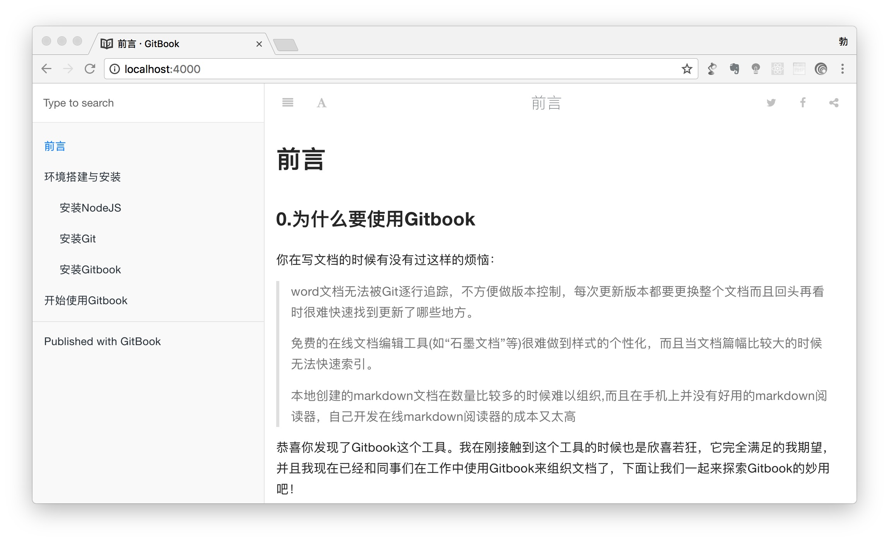

前言
作者注：本文适合新手学习，不太适合进阶阅读
为什么要使用Gitbook
你在写文档的时候有没有过这样的烦恼：
word文档无法被Git逐行追踪，不方便做版本控制，每次更新版本都要更换整个文档而且回头再看时很难快速找到更新了哪些地方。
免费的在线文档编辑工具(如“石墨文档”等)很难做到样式的个性化，而且当文档篇幅比较大的时候不便于组织。甚至可能你的公司根本不允许你把文档放在在线文档平台上。
本地创建的markdown文档在数量比较多的时候难以组织,而且在手机上并没有好用的markdown阅读器，自己开发一个好用的在线markdown阅读器的成本又太高。
恭喜你发现了Gitbook这个工具。我在刚接触到这个工具的时候也是欣喜若狂，它完全满足的我期望，并且我现在已经和同事们在工作中使用Gitbook来组织文档了，下面让我们一起来探索Gitbook的妙用吧！
Gitbook是什么
Gitbook是一个运行在Node上的文档编辑工具。你可以在一个空目录(文件夹)下初始化一个Gitbook项目，然后按照Gitbook的约定去编写文档，Gitbook可以帮助你组织你在这个目录下的所有文档，以非常友好的交互方式来展示它。并且编写起来非常简单！
Gitbook是怎么写文档的
Gitbook是使用markdown语法来写文档的，如果你没有接触过markdown，请不要怕。这是一个很简单的标记语言，如果你对编程是0基础的话，那么你从学习到可以熟练运用markdown语法应该需要….两个小时吧！
使用Gitbook编写文档时候要编写一个目录文件和多个文档页面，它们全部采用markdown语法编写。
再重复一次，markdown语法很简单。
Gitbook是怎么阅读文档的
Gitbook文档是通过浏览器来阅读的，你可以把文档放在互联网上供所有人阅读，也可以在本地使用localhost来阅读，可以更改字体、字号、色彩主题，并且可以对标题进行搜索。如下所示：

环境搭建与安装
所需工具与基础知识
Gitbook与NodeJS
Gitbook是运行在NodeJS上的js程序。可以使用npm来直接安装Gitbook，并且可以使用NodeJS以http服务的形式来展示Gitbook内容。所以NodeJS是Gitbook运行的基础。
如果你还不具备NodeJS的知识基础，那么很遗憾，你需要先查询相关资料了解什么是NodeJS. 但是如果你只是为了使用Gitbook的话，你需要掌握的NodeJS知识并不是很多。
Gitbook与MarkDown
Gitbook是一个文档编写工具，只支持markdown语法来解析你的文档。所以你需要首先学会markdown语法。幸运的是markdown的语法很简单，即使没有任何编程基础，你仍然能够在2个小时之内熟练markdown的写法。
Gitbook与Git
虽然Gitbook的名字里面包含Git, 但是对于使用Gitbook来说Git并不是必需的。你完全可以脱离Git来使用Gitbook，然后如果你已经掌握Git的用法当然是最好的，用Git来对Gitbook文档进行版本管理的感觉爽的让人不要不要的。
在本章的后续章节中，我会讲述NodeJS与Git、Gitbook的安装方法，但是只会提供Mac环境下的安装方式。这首先是因为我的精力有限，其次我手头没有Windows设备。
安装NodeJS
在Mac上安装NodeJS
在Mac安装NodeJS的方式很简单，可以使用homebrew（不过不建议你这么做，因为homebrew对macOS10.12的支持并不给力）
你同样也可以去nodejs的官网去下载安装包来安装（这是推荐的做法）。
安装完成之后在“终端”键入如下命令查看node的版本号，如果可以查到则说明安装成功
同时可以通过如下命令来查看npm的版本号
安装Git
安装与使用git的方法在这里不做过多的描述，建议查看廖雪峰的git教程，讲的比较详细.
如果你对Git没有兴趣，可以直接查看下面的其他章节，因为本文的案例并没有对Git有太多依赖。但我不建议你跳过Git，如果你有时间，还是建议你先把Git学一遍。不要捡了芝麻丢了西瓜。
安装Gitbook
安装了NodeJS和npm之后，就可以安装Gitbook了.建议进行全局安装：
安装完成之后，可以执行以下命令查看版本号，来了解是否安装成功：
如果返回来如下所示的版本号，则证明安装成功：
这个时候，你就已经可以开始使用Gitbook来编写文档了
开始使用Gitbook
如果你已经完成了环境的搭建与安装，那么恭喜你已经可以开始使用Gitbook了。真正使用起来是很方便的。
由于你安装Gitbook的时候是全局安装的，所以你可以在任何位置（建议在家目录中创建一个子目录）开始一个Gitbook项目。
首先用mkdir命令来创建一个目录：
此时，你仅仅有一个空的目录mybook，但它还不是一个Gitbook项目。使用cd命令进入这个空目录，然后执行以下命令来将这个空目录初始化为一个Gitbook项目：
这个时候目录下会初始化两个文件，分别为README.md、SUMMARY.md。后面的小节中我会详细介绍这些文件。
下面列出的是从创建空目录到完成Gitbook初始化的所有命令与返回，可以看到我先创建了一个空目录叫mybook，然后进入到这个目录执行来gitbook init，然后在目录中初始化了两个文件：
如果已经完成了上面的步骤，你就可以开始“阅读”这本用Gitbook写的书了，虽然这书只有一页，而且这唯一的一页也只有一个标题，但是这毕竟证明了你已经成功地开始使用Gitbook了.
在mybook目录中执行下面的命令，开始使用NodeJS来编译你的md文档，并提供http服务：
你会看到如下的返回：
此时，不要关闭命令行，打开你的浏览器，访问http://localhost:4000你就可以开始阅读这本只有一页和一个标题的gitbook了。如下图所示：
编写目录文件
为了便于书写，你的Gitbook项目往往会根据文档内容分为许多个markdown文档。
比如需求文档中每一个模块甚至每一个功能点都会单独写一个md文档；或者在组织一个接口文档的时候每一个类型的接口单独整理为一个md文档；还或者你编写数据字典时候希望把每一个表或视图都单独地整理为一个md文档。
目录文件就是来整理你的Gitbook项目中所有的文档的。
目录文件的文件名是SUMMARY.md，它的路径在项目一级目录下。如果你的项目中没有这个文件，Gitbook会在初始化时候帮你创建这个目录文件。
在一个项目中，目录文件只有一个，而且也是最重要的一个文件。你甚至可以没有其他的md文件，但是只要规范地完成了目录文件的编写，再执行gitbook init命令的时候，Gitbook会按照目录文件指定的路径帮你逐个创建其他文件。
目录文件的写法是这样的：
你可以试着按照上述写法来编写一个目录文件，然后再执行gitbook init，再次查看的时候是不是发现项目中多出来了一些文件和子目录呢？
现在先不要着急编写每一个文件的内容，我们继续探索目录文件。
要知道，通过目录文件帮我们自动创建项目文件只是一个小糖果。目录文件真正的作用是在浏览器网页中建立菜单，并且将每一个菜单指向正确的文档文件。
在项目一级目录下执行下面的命令：
然后用浏览器访问http://localhost:4000，你是不是可以看到左侧的菜单栏了呢？它与你的目录文件是一致的。
编写具体的文档文件
在上一节我们说到了创建目录文件SUMMARY.md，并且提到了使用gitbook init命令和目录文件来自动生成具体的文档文件。但是自动生成的文档文件是只有标题，没有内容的。我们需要编写这些内容。
前面已经讲过，编写文档内容是使用markdown语法，gitbook会完全遵循markdown语法来解析我们的文档。如果你已经掌握来markdown的写法，那么你已经可以开始书写了，Enjoy it!
可能我在这里唯一要提的，就是如何在文档中插入图片。
在文档中插入图片
你可以有两种方式存放你的图片：
- 放在远程图片库，通过url访问。
- 放在本地，直接从本地加载。
第一种方式麻烦的地方在于找到一个合适的图片托管平台，但是如果能够找到合适的平台，那么剩下的事情markdown语法里面就已经讲过了。另外，如果采取了第一种方式，就意味着你必须要在连接到互联网的情况下才能正常查看文档中的图片，无法做到纯净的本地阅读。因此我更加推荐第二种方式。
第二种方式是将图片放在项目本地。你可以像我一样在项目的一级目录下创建一个imgs子目录：
这样，就可以直接在文档中对图片进行引用了。
比如说，想要在一级目录的README.md文件中引用图片pic1.png,只需要添加如下的markdown代码：
如果想要在chapter1/section1.1.md中引用同一张图片pic1.png的话，也是同样的方式，但是需要注意路径的写法有一些不同，这是由于引用图片的文档与图片的相对路径不同所导致的，如果你不懂相对路径的概念，请务必去学习一下